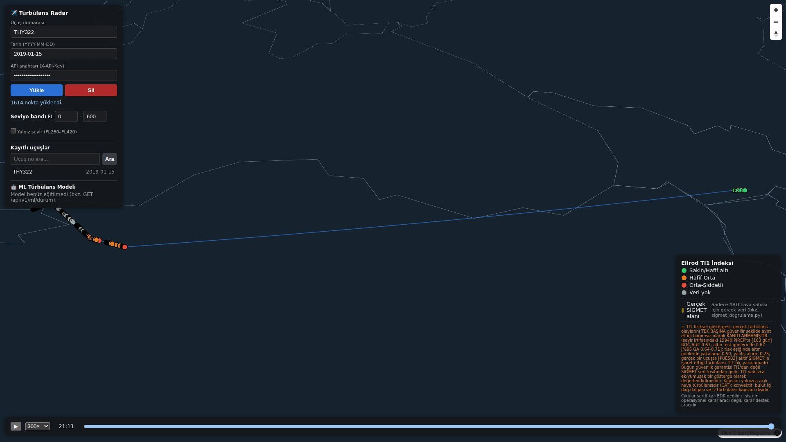
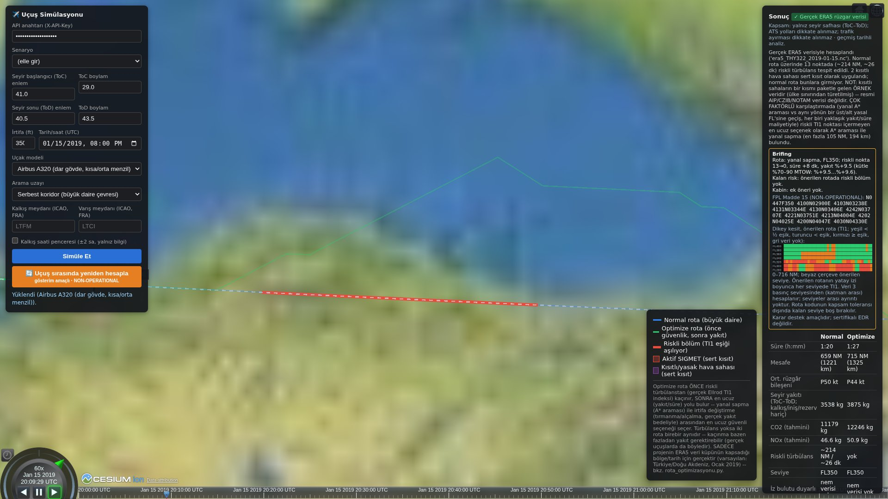
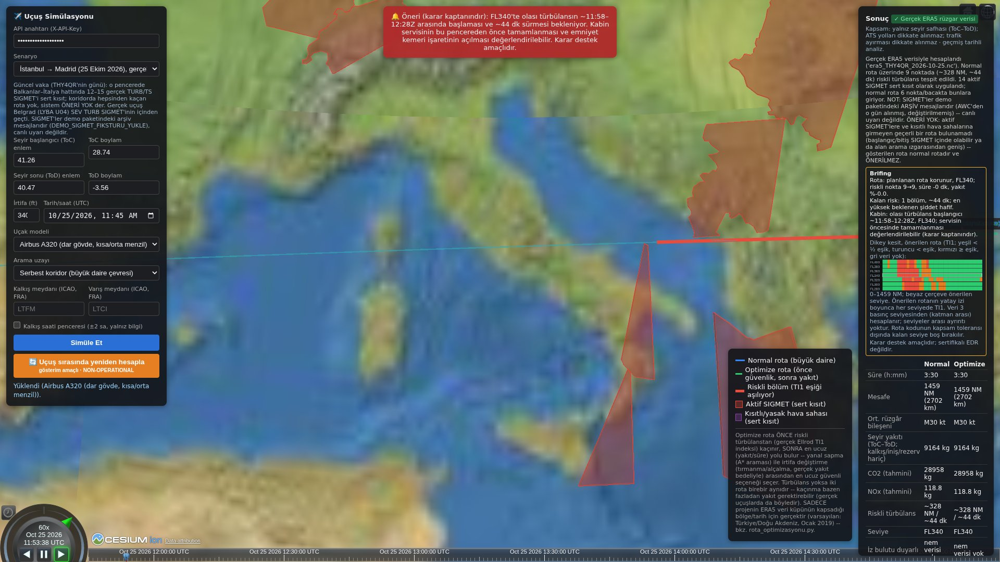
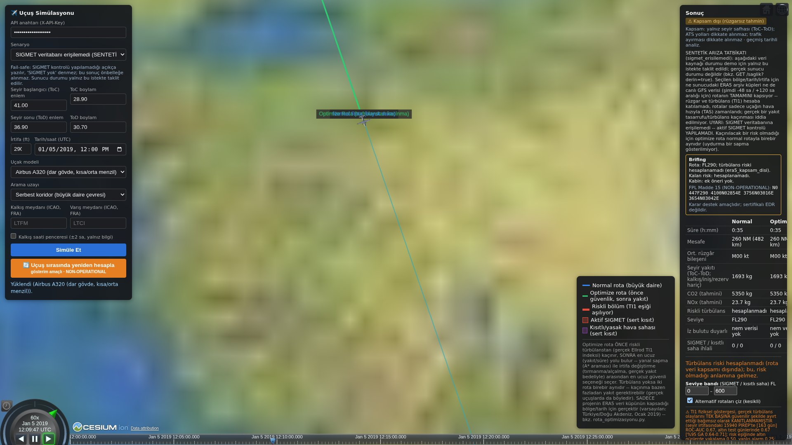
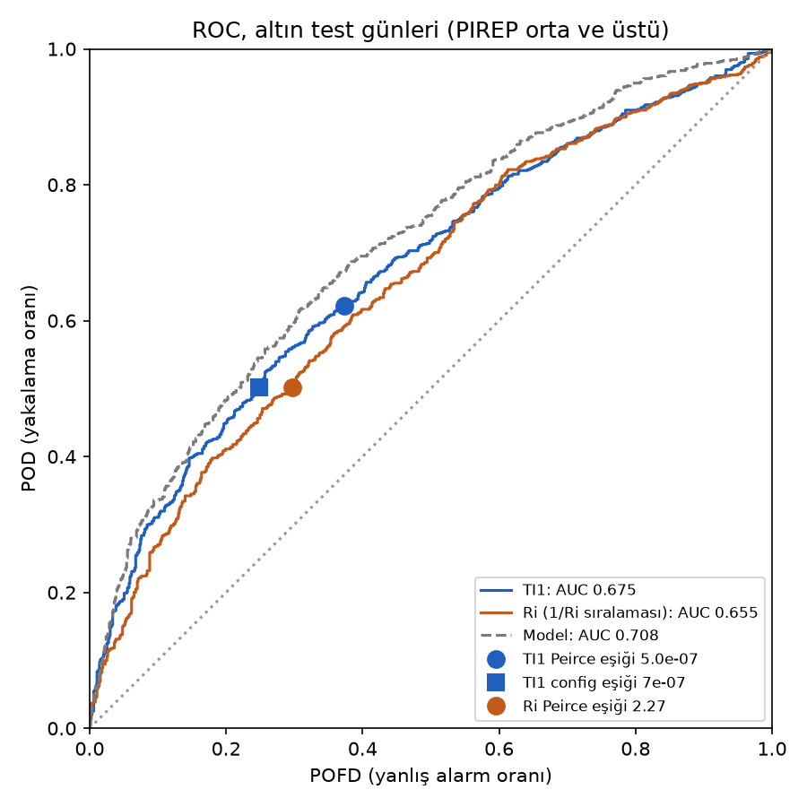
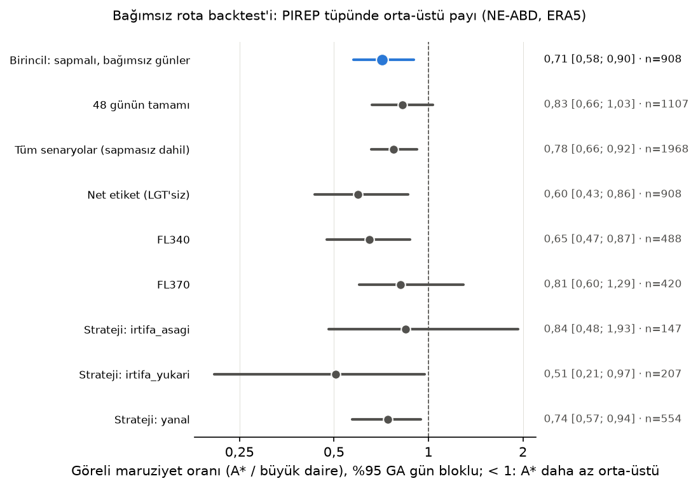

Görünmeyen açık hava türbülansını, açık veriyle ölçülebilir bir risk göstergesine ve
dispeçerin kullanabileceği bir rota kararına dönüştürmek.
Tevfik Üner · Danışman: Arş. Gör. Dr. Fatih Titrek
Bilgisayar Mühendisliği, Konya Teknik Üniversitesi · Kasım 2026
1 · Problem
Seyir irtifasındaki türbülans görünmez, ama insanları yaralar
1/3+
ABD'de 2009–2018 arası tarifeli havayolu kazalarının üçte birinden fazlası türbülansla ilgili; çoğunda uçak hasar görmedi ama en az bir kişi ağır yaralandı, en sık kabin ekibi. NTSB SS-21/01 (2021)
0
Açık hava türbülansında bulut ya da yağış yoktur; uçağın hava radarı onu göremez. Pilotun elindeki tek uyarı tahmin ve diğer pilotların gecikmeli raporlarıdır.
2×+
1980–2021 arasında orta ve üstü açık hava türbülansı sıklığı Orta Doğu'da iki katından fazla arttı. Foudad vd. (2024), JGR Atmospheres
Türkiye'den gerçek örnek: 21 Ağustos 2019, Delhi→Londra seferindeki bir Airbus A340, Kuzey Türkiye üzerinde FL360'ta
orta-şiddetli türbülansa girdi, bir yolcu ağır yaralandı. Kaza raporuna göre türbülans tahmin edilmemişti ve hava radarında görünmüyordu.
(AAIB Bulletin 2/2020, G-VFIT; yakında tek bir bulut vardı.)
Türbülans Tespit ve Rota Optimizasyonu2
2 · Bugün ne var, eksik olan ne?
Çözümler var, ama ya kapalı ya da kararın dışında
Bugünkü araç
Ne sağlıyor
Sınırı
GTG, WAFS (resmî tahmin)
Hava modelinden türbülans tahmin haritası
Harita verir; rota kararını dispeçere bırakır
PIREP (pilot raporu)
Yaşanmış türbülansın bildirimi
Gönüllü, gecikmeli, öznel; Türkiye'de kamuya açık değil
Uçak EDR ölçümü, IATA Turbulence Aware
Uçağın kendi sensörüyle nesnel ölçüm
Havayollarının verisi; izinle, çoğu zaman ücretle
SkyPath gibi ticari ürünler
Gözlem ağı + kısa vadeli tahmin
Kapalı; doğruluk iddiaları şirket kaynaklı
Akademik ML çalışmaları
Yüksek başarı oranları (AUC 0,86–0,90)
Çoğu yalnız model; rota yok; rastgele bölme sonucu iyimser gösterebilir
Boşluk: Açık veriyle çalışan, göstergenin ne kadar güvenilir olduğunu ölçen ve bu ölçümü
rota kararının kurallarına yansıtan bir sistem; Türkiye için hiç yok.
Türbülans Tespit ve Rota Optimizasyonu3
3 · Araştırma sorusu
Sorduğumuz soru
Yalnızca açık veriyle, bir dispeçerin rota kararına girdi olabilecek,
ölçülebilir ve dürüst bir türbülans risk göstergesi üretilebilir mi?
Kapsam
Seyir safhası: FL280–FL420
Açık hava türbülansı (jet akımı kayması)
Geçmiş uçuş analizi ve uçuş öncesi planlama
Neden seyir?
Alçak irtifadaki fırtına türbülansı büyük ölçüde radarda görünür ve SIGMET ile duyurulur.
Seyirdeki açık hava türbülansı görünmez; aracı en az olan kısım.
Alçalma/tırmanma farklı bir fizik ve ayrı bir model ister (yol haritasında).
Türbülans Tespit ve Rota Optimizasyonu4
4 · Çözüm
Dört katman, her biri ayrı ölçülür
Türbülans Tespit ve Rota Optimizasyonu5
5 · Veri nereden geliyor?
Yalnızca açık veri
Kaynak
Ne veriyor
Nasıl çekiyoruz
Türkiye
OpenSky Network
Uçağın ~1 sn'lik konumu, barometrik irtifası, hızı (ADS-B)
Akademik hesapla SQL sorgusu; bitmiş uçuşlar önbelleğe
✓
ERA5 (Copernicus)
Rüzgâr, sıcaklık; 0,25°, saatlik, 1940'tan bugüne
Uçuşa özel küçük dilim; olmazsa Google Cloud yedeği
✓
GFS (NOAA)
Canlı ve ileriye dönük hava tahmini
Son 48 saat ve uçuş öncesi planlama için
✓
SIGMET (NOAA AWC)
Resmî tehlikeli hava uyarıları
15 dakikada bir; 30 Eylül'den beri 202 bölgeden 13.900 kayıt
✓ 161 Türkiye
PIREP (Iowa Mesonet)
Pilot türbülans raporları
Her gece artımlı; seyir irtifası filtresi
✗ yalnız ABD
MADIS EDR (NOAA)
Uçağın sensörüyle ölçülen türbülans
Saatlik dosyalar; gecede en fazla 1 gün
✗ yalnız ABD
Sağlayıcılara saygı kodun içinde: aynı anda tek indirme (veritabanı kilidi), günlük istek ve
500 MB veri sınırı, istekler arası bekleme. Hesap için gereken her şey Türkiye'yi kapsıyor; eksik olan yalnızca doğrulama etiketi.
Türbülans Tespit ve Rota Optimizasyonu6
6 · Nasıl çalışıyor: eşleştirme
Uçağın izi ile hava verisini dört eksende birleştirmek
Eksen
Uçak (OpenSky)
Hava (ERA5)
Bağlantı
Zaman
~1 sn
saatlik
en yakın saat (>3 sa ise yok)
Konum
enlem/boylam
0,25° ızgara
en yakın hücre
Yükseklik
barometrik irtifa
basınç seviyesi
ISA formülü
Katman
uçağın basıncını çevreleyen iki seviye
düşey kayma
Neden barometrik irtifa?
Seyirde altimetre 1013,25 hPa'ya ayarlıdır; barometrik irtifa doğrudan
standart atmosfer basıncına karşılık gelir. GPS irtifası sıcaklığa göre sapar (örnek uçuşta medyan 225 m).
Kapsam dışı = "veri yok"
Hava verisinin uzağındaki nokta hesaplanmaz. Aksi hâlde yazılım en yakın hücreyi
ne kadar uzak olursa olsun döndürür ve sessizce yanlış değer üretirdi. Örnek uçuşta 1614 noktanın 720'si seyirde hesaplandı.
5.000 nokta tek bir vektörel sorguyla ~0,03 saniyede eşlenir (döngü yok).
Türbülans Tespit ve Rota Optimizasyonu7
7 · Nasıl çalışıyor: gösterge ve rota kararı
Göstergeden karara
Türbülans göstergeleri
TI1 = düşey rüzgâr kayması × yatay deformasyon (Ellrod ve Knapp, 1992)
Richardson sayısı (kararlılık), birleşik EDR (0–1 ölçek)
Risk eşiği TI1 ≥ 7·10⁻⁷ s⁻²: veriden, yalnız eğitim günlerinde seçildi.
Öneri yoksa, öneri verilmez
Güvenli rota bulunamazsa sistem "ÖNERİ YOK" der.
Kaçınılacak risk yoksa rota büyük daireyle aynı kalır; uydurma iyileşme gösterilmez.
A* aramasında
Kural
SERT SIGMET, kısıtlı saha
Hiç girilmez (varış zamanı ve irtifa bandıyla)
YUMUŞAK TI1 riski
Mümkünse kaçınılır; değilse en az riskli yol
MALİYET yakıt, süre
Rüzgârla yer hızı; açık kaynak OpenAP yakıt modeli
SEÇENEK seviye
Bir üst/alt yasal seviye, tırmanma bedeliyle
Neden SIGMET sert, TI1 yumuşak? Çünkü TI1'in güvenilirliğini ölçtük ve
orta düzeyde çıktı (sonraki slaytlar). Güvenlik garantisi resmî uyarıdan gelir.
Türbülans Tespit ve Rota Optimizasyonu8
8 · Mimari
Sistemi çalıştırınca ne oluyor?
Türbülans Tespit ve Rota Optimizasyonu9
9 · Sistem çalışırken: gerçek uçuş
THY322, 15 Ocak 2019: gerçek ADS-B izi üzerinde türbülans göstergesi

1614 gerçek konum noktası (OpenSky)
Her nokta, uçağın barometrik irtifasındaki ERA5 rüzgârıyla eşlendi
İzdeki ~1 saatlik boşlukta OpenSky'da kayıt yok; sistem boşluğu doldurmuyor
Analiz süresi: 0,23 saniye
Türbülans Tespit ve Rota Optimizasyonu10
10 · Sistem çalışırken: rota önerisi
Aynı koridorda: riskli bölümden kaçan rota ve bedeli

Büyük daire, FL350: ~214 NM, ~26 dakikalık riskli bölüm (kırmızı)
Öneri: yanal sapma; riskli nokta 13 → 0
Bedel: +8 dakika, %9,5 yakıt (tahmini)
Daha ucuz seçenek (bir üst seviye) de tabloda: 1 riskli nokta bırakıyor; takas dispeçerin kararı
Ağsız demo paketiyle, temiz kurulumdan alınmış gerçek çıktı. Yakıt açık kaynak OpenAP modeliyle tahmindir, ölçüm değildir.
Türbülans Tespit ve Rota Optimizasyonu11
11 · Güncel vaka: 25 Ekim 2026
Gerçek bir uçuş, gerçek bir uyarının içinden geçti

THY4QR İstanbul → Madrid: seyrin tamamı ADS-B'li, 11.180 noktada TI1
Belgrad şiddetli türbülans SIGMET'i (LYBA U04, FL260–380, 12:06–15:30) içindeki 730 noktanın %100'ü riskli; dışarıda %12,8
Aynı gün Londra → Antalya: içeride %96,8, dışarıda %37,5
Simülasyonda rota çevresindeki 14 aktif SIGMET sert kısıt: koridorda hepsinden kaçan rota yok, sistem ÖNERİ YOK der
Keşifsel: SIGMET gözlem değil uyarıdır; iki uçuş, noktalar bağımsız değil. SIGMET'ler o gün AWC'den alınmış, değiştirilmemiş arşiv mesajları; ekranda canlı uyarı olmadıkları yazar.
Türbülans Tespit ve Rota Optimizasyonu12
12 · Sistem bilmediğini söyler
Kötü günde ne olur?

Durum
Sistemin davranışı
Hava verisi kapsam dışı
Risk "0" değil, "hesaplanmadı"
Güvenli rota yok
"ÖNERİ YOK"; normal rota önerilmez
SIGMET veritabanına erişilemedi
Kritik uyarı; "SIGMET yok" denmez, sonuç önbelleğe alınmaz
ML girdisi eğitim desteği dışında
ML çıktısı verilmez (Türkiye %2,9, güncel vaka %6,5 nokta)
Ekrandaki arıza SENTETİK bir tatbikattır: yalnız demo kurulumunda, yalnız o istek için taklit edilir ve ekranda öyle etiketlenir.
Türbülans Tespit ve Rota Optimizasyonu13
13 · Kanıt: gösterge ne kadar güvenilir?
Bağımsız etiketle ölçtük: orta düzey, ve bunu söylüyoruz

Ölçüm
Sonuç (%95 güven aralığı)
TI1, 15.940 seyir PIREP'i, 163 gün
0,673 [0,661–0,684]
TI1, eşikte (7·10⁻⁷)
yakalama 0,50 · yanlış alarm 0,25
Makine öğrenmesi modeli − TI1
+0,033 [+0,018; +0,049] → devreye girdi
Uçağın ölçtüğü EDR (MADIS, 45.075 ölçüm)
TI1 0,722 · model 0,775
Altın test günleri: 16 gün dondurulup hiçbir eğitime sokulmadı.
Gün gruplu doğrulama: aynı günün raporları hem eğitimde hem testte olmaz.
Rastgele tahmin = 0,5. Literatürdeki 0,86–0,90 değerleri farklı bölme ve etiketle; doğrudan kıyaslanamaz.
Türbülans Tespit ve Rota Optimizasyonu14
14 · Kanıt: önerilen rota gerçekten daha az türbülanslı mı?
Algoritmanın hiç görmediği pilot raporlarıyla sınadık

ABD kuzeydoğusu: 8 şehir çifti × 48 gün × 3 kalkış × 2 seviye = 2.304 rota
Her rotanın çevresindeki pilot raporlarında orta ve üstü türbülans payı: büyük daire 0,687 · önerilen rota 0,610
Oran 0,71 [0,58; 0,90]: aralığın tamamı 1'in altında → anlamlı azalma
Tırmanma stratejisinde 0,51 [0,21; 0,97]
Dürüst not: 48 günün tamamında 0,83 [0,66; 1,03], anlamlı değil.
Tek bölge, simüle rota, pilotlar türbülans görünce rapor verme eğiliminde. Bu bir ispat değil, bağımsız veriyle tutarlı kanıt.
Türbülans Tespit ve Rota Optimizasyonu15
15 · Sistem ne kadar sağlam?
Prototip değil, işletilebilir bir sistem
1.300
otomatik test (birim, veritabanı, gerçek veri, tarayıcı); her değişiklikte sürekli entegrasyon
0,23 sn
tek uçuş analizi (hedef ≤ 10 sn). 16 eşzamanlı rota isteğinde p95 3,95 sn (hedef ≤ 5 sn)
%0
yük testinde hata oranı; işçi dakikada 467 görev işledi
Görev kuyruğu ve dağıtık kilit: işler kaybolmaz, dış kaynağa aynı anda tek indirme
Model kapısı: yeni model ancak öncekini ve TI1'i geçerse devreye girer; geri alınabilir
Günlük veritabanı yedeği + bulut kopyası
İnternetsiz demo: depoyla gelen gerçek uçuş ve ERA5 dilimiyle çalışır
Ölçümler: dizüstü bilgisayar (i7-13700H, WSL2), 1 ve 19 Ekim 2026; test sayısı 1 Kasım 2026.
Türbülans Tespit ve Rota Optimizasyonu16
16 · Dünyada ve Türkiye'de durum
Parçalar var; bu bileşim ve Türkiye uygulaması yok
Çalışma
Gerçek uçuş izi
Yalnız açık veri
Rota önerisi
Sızıntısız doğrulama
Çalışan sistem
Türkiye
Zhu vd. 2026 (TR Part C)
?
kısmen
✓
?
?
✗
Gökdeniz ve Ülkü 2026 (Türk ekip)
✗
kısmen
✗
✗
✗
✗ ABD verisi
Muñoz-Esparza vd. 2020
✗
✗
✗
?
?
✗
Cheung 2018 (A* kaçınma)
?
?
✓
✗
✗
✗
Açık kaynak benzerleri (GitHub)
kısmen
✓
kısmen
kısmen
✓ prototip
✗
SkyPath (ticari)
✓
✗
?
yayımlanmamış
✓
?
Bu proje
✓
✓
✓
✓
✓
hesap ✓ · doğrulama ✗
962 çalışma (OpenAlex) ve ~70 proje (GitHub) tarandı: Türkiye için havacılık türbülansı tahmini/rota çalışması bulunamadı;
tek Türk ekip de ABD verisi kullandı. "Dünyada ilk" iddiamız yok; farkımız bileşim ve doğrulama titizliği. "?" = yayında bilgi yok.
Türbülans Tespit ve Rota Optimizasyonu17
17 · Dürüst sınırlar
Neyi iddia etmiyoruz?
Türkiye'de başarı ölçülmedi. Pilot raporu ve uçak EDR'si Türkiye için kamuya açık değil. Model Türkiye'de çalışıyor (girdilerin %97'si ABD aralığında) ama orada ölçülmedi.
Yalnız seyir ve açık hava türbülansı. Fırtına, dağ dalgası ve alçak irtifa kapsam dışı.
Ölçek: ERA5 ~25 km ve saatlik; türbülans yüzlerce metre ölçeğinde.
Resmî ürünlerle (GTG/WAFS) kıyaslanmadı. "Mevcuttan iyi" demiyoruz.
Yakıt açık kaynak modelle tahmin; ölçüm değil.
Son kullanıcı testi yapılmadı (dispeçer, pilot).
OpenSky verisi ticari olmayan araştırma içindir.
Çıktılar sertifikalı EDR değildir. Sistem operasyonel karar aracı değil, karar destek aracıdır.
Türbülans Tespit ve Rota Optimizasyonu18
18 · Yol haritası
Bundan sonra: önce ölç, sonra genişlet
1 · Türkiye etiketi
TUSAŞ, Boeing, Airbus, DLR, NASA (dış uzman önerisi), MGM ve IATA'ya
resmî veri talebi; taslaklar hazır. Sistem 30 Eylül'den beri Türkiye SIGMET'lerini arşivliyor: 161 kayıt, 5'i türbülans uyarısı.
2 · Etiketsiz bölgeye taşıma
Literatürdeki iki yol: transfer öğrenme (Zhu vd. 2026) ve fizik bilgili model.
İlk adım: Türkiye türbülans SIGMET'leriyle gösterge karşılaştırması.
3 · Kapsamı büyütmek
Tırmanma/alçalma için ayrı model: ek basınç seviyeleri, konvektif enerji, arazi
(Türkiye'de dağ dalgası önemli). GTG/WAFS kıyası; dispeçerle kullanılabilirlik testi.
İlke: doğrulama karnesi olmayan bir tahmin ürünü eklenmez. Her yeni özellik, önce bağımsız veriyle ölçülür.
Türbülans Tespit ve Rota Optimizasyonu19
Özet
Görünmeyen türbülansı ölçülebilir hâle getirdik; ölçtüğümüz sınırı rota kararına taşıdık.
✓ Yalnızca açık veriyle, gerçek uçuş izleri üzerinde çalışan bir sistem
✓ Göstergenin güvenilirliği bağımsız etiketle, sızıntısız yöntemle ölçüldü
✓ Güvenlik resmî uyarılardan, risk azaltma ölçülmüş göstergeden
✓ Türkiye'ye uygulanabilir; doğrulama için kurumsal veri talepleri hazır
Teşekkürler · Sorularınız? Sertifikalı EDR değildir; karar destek aracıdır.